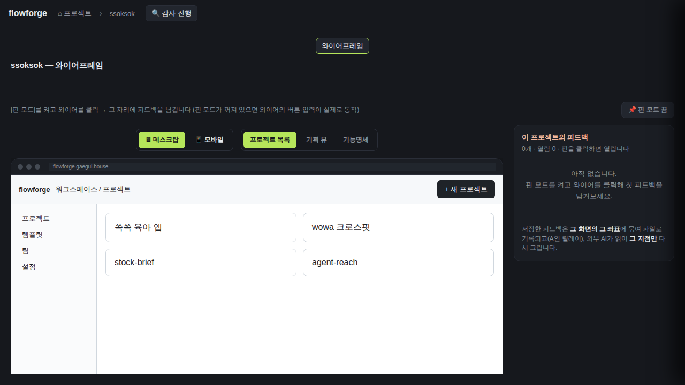
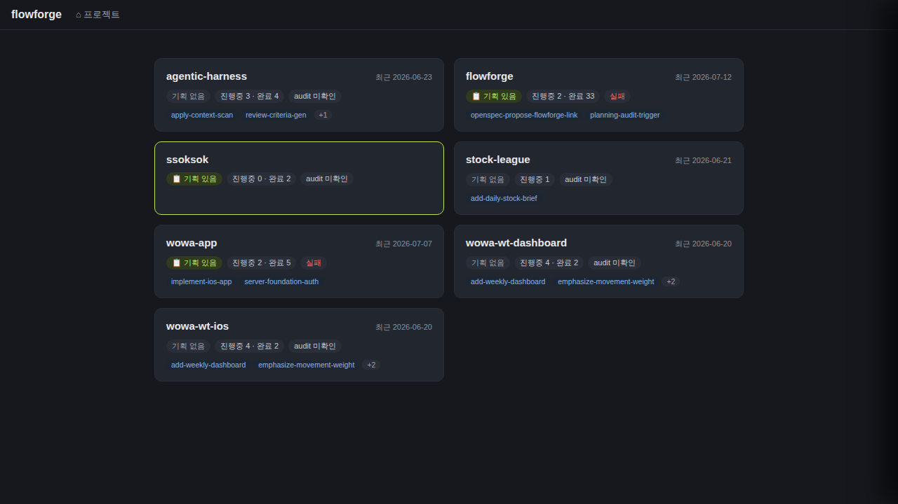

검증일: 2026-07-12T13:05:00+09:00 · 환경: {} · run: run-20260712-1305 · commit 79f4a28a (dirty)
PASS 7 · FAIL 0 · 검증 안 함 0 · SKIPPED 0
| Requirement | Scenario | Layer | 검증 수단 | 탐지 근거(basis) | 결과 | 증거 |
|---|---|---|---|---|---|---|
| 미감사 프로젝트에 감사 실행 버튼을 노출한다 | 미확인 상태에 버튼 표시 (auditStatus=unknown → '감사 진행' 버튼 노출) | web | 라이브 browse(gstack, localhost:8812): auditStatus=unknown 프로젝트(ssoksok) 상세 진입 → 헤더에 '🔍 감사 진행' 버튼(@e6) 실제 노출 확인. 코드: App.tsx:970 조건(auditStatus unknown/warn). | web adapter: web/src/App.tsx + gstack browse 8812 렌더 | ✓ PASS |  |
| 미감사 프로젝트에 감사 실행 버튼을 노출한다 | 정합/불합(fail) 상태에는 강제 노출 안 함 (경계·에러경로: FAIL→'fail'은 unknown/warn 아님 → 버튼 숨김) | web | 라이브 browse: flowforge(audit.json finalJudgment=FAIL → auditStatus='fail') 상세엔 '감사 진행' 버튼 미노출 확인 — mapFinalJudgment(projects.ts:117~120: FAIL→fail)·App.tsx:970(unknown/warn만). 경계값(상태 enum 경계)·에러경로(파싱 실패→unknown 폴백) 함께 커버. | web adapter: projects.ts mapFinalJudgment + App.tsx:970 + 라이브 렌더 | ✓ PASS |  |
| 감사 실행은 인증 게이트와 프로젝트 화이트리스트를 통과해야 한다 | 무인증 요청 거부 (게이트 활성 시 401, 큐 미호출) | server | jest+supertest auditRun.test.ts: FLOWFORGE_WRITE_TOKEN 설정(게이트 활성) → Authorization 없이 POST /api/docs/flowforge/audit-run → 401 unauthorized + 큐 미호출 assert. requireWriteAuth.ts gateEnabled()=true 경로. (dev-mode 8812는 gateEnabled=false passthrough라 라이브 401 대신 테스트로 실증 — 그 사실 명시.) | server adapter: auditRun.test.ts (npm test, jest 15/15 PASS) | ✓ PASS | auditRun.test.ts '무인증 → 401, 큐 미호출': expect(res.status).toBe(401); expect(res.body).toEqual({error:'unauthorized'}). npm test → 15 passed. |
| 감사 실행은 인증 게이트와 프로젝트 화이트리스트를 통과해야 한다 | 경로조작 project 거부 (.. / 절대경로 → 4xx, 미실행) | server | 라이브 curl(8812): POST /api/docs/..%2f..%2fetc/audit-run → 400 invalid_project. 미등록 nonexistent-proj-xyz → 400. resolveProjectDir(docs.ts:681)=null→400. 빈값/특수문자/traversal 경계 커버. jest auditRun.test.ts에도 경로조작 케이스. | server adapter: docs.ts resolveProjectDir + 라이브 curl 8812 + jest | ✓ PASS | curl -XPOST .../..%2f..%2fetc/audit-run → HTTP 400 {"error":"invalid_project"}; curl .../nonexistent-proj-xyz/audit-run → HTTP 400. resolveProjectDir null 가드. |
| 감사 실행은 인증 게이트와 프로젝트 화이트리스트를 통과해야 한다 | 연타 디바운스 (동시성: 중복 enqueue 억제) | server | jest auditTrigger.test.ts: DEBOUNCE_MS 창 내 반복 호출 → 잡 1건만 enqueue, 후속은 debounced(202 관용). auditTrigger.ts 프로세스 로컬 맵. 동시성 클래스 커버. | server adapter: auditTrigger.test.ts (jest) | ✓ PASS | auditTrigger.test.ts 디바운스 케이스 PASS (jest 15/15). docs.ts:695 debounced→202. |
| 감사는 호스트 워커가 판정을 결정적으로 산출하고 결과를 저장한다 | 감사 실행 후 audit.json 갱신 (워커→openspec-audit 스킬→docs/audit.json 새 finalJudgment) | server | 라이브 e2e: 큐 task2(flowforge/audit) status=done + flowforge/docs/audit.json 생성(runId=run-20260712-1224, finalJudgment=FAIL). 재실행 실증: 버튼 엔드포인트로 task3 enqueue(202) → 워커 처리 중 audit.json 재작성(mtime 12:24→12:52, runId=run-20260712-1300, counts PASS117/FAIL10/UNVERIFIABLE193). 판정=스킬 내부 결정론 3-step 산출(worker.py:48 /openspec-audit 고정템플릿, shell 미경유). 명령주입 change 프롬프트 미유출·미등록 거부 unittest 커버. | server adapter(워커): queue.db + docs/audit.json 재조회 + worker.py + test_worker.py(19 PASS) | ✓ PASS | queue task2=done; task3 enqueue via POST audit-run(202,taskId=3)→처리 중 docs/audit.json 재작성 runId run-20260712-1224→run-20260712-1300, finalJudgment=FAIL, counts={PASS:117,FAIL:10,UNVERIFIABLE:193}. FAIL=코드↔spec 대조 판정(audit 정상 동작)이지 AUD scenario 실패 아님. test_worker.py: audit 미등록 거부·명령주입 프롬프트 미유출 PASS. |
| 감사는 호스트 워커가 판정을 결정적으로 산출하고 결과를 저장한다 | UI가 결과를 재조회해 반영한다 (감사 완료 후 폴링 재조회 → 판정 화면 표시) | web | 코드: runProjectAudit(App.tsx:551) 202 후 fetchAuditCapabilities 폴링(MAX_POLLS=20, POLL_MS=3000) → setFeatureAudit 판정 갱신. 라이브: flowforge 카드/상세가 저장된 audit.json(finalJudgment=FAIL)을 readAuditStatus→'fail' 배지로 반영(browse 렌더 확인). 서버 readAuditStatus(projects.ts:129)가 audit.json 재조회. | web adapter: App.tsx runProjectAudit 폴링 + projects.ts readAuditStatus + gstack browse 8812 | ✓ PASS |
| Requirement | null | 빈값 | 잘못된타입 | 경계값 | 에러경로 | 동시성 | 대량 | 특수문자 | 판정 |
|---|---|---|---|---|---|---|---|---|---|
| 미감사 프로젝트에 감사 실행 버튼을 노출한다 | ✓ | N/A | N/A | ✓ | ✓ | N/A | N/A | N/A | ✓ 충분 |
| 감사 실행은 인증 게이트와 프로젝트 화이트리스트를 통과해야 한다 | ✓ | ✓ | N/A | ✓ | ✓ | ✓ | N/A | ✓ | ✓ 충분 |
| 감사는 호스트 워커가 판정을 결정적으로 산출하고 결과를 저장한다 | ✓ | ✓ | N/A | ✓ | ✓ | ✓ | N/A | ✓ | ✓ 충분 |
✓=covered · N/A=해당없음(사유 hover) · ✗=missing. happy-path만이면 검증 불충분 → 최종 FAIL 차단.
| Layer | 상태 | ran | passed | failed | 근거/사유 |
|---|---|---|---|---|---|
| server | ✓ PASS | 6 | 6 | 0 | express 라우트 + openspec-reports 호스트 워커. jest(auditRun/auditTrigger 15건)·python unittest(worker 19·console 25)·라이브 curl 8812·큐 e2e(queue.db)·docs/audit.json 재조회. |
| web | ✓ PASS | 4 | 4 | 0 | web/src (App.tsx 버튼·runProjectAudit 폴링, projects.ts readAuditStatus). gstack browse 라이브 렌더 8812 — ssoksok(unknown) 버튼 노출·flowforge(fail) 배지 반영 스크린샷. |
| android | – SKIPPED | 0 | 0 | 0 | 적용 불가: mobile 레이어 없음 |
| ios | – SKIPPED | 0 | 0 | 0 | 적용 불가: mobile 레이어 없음 / macOS 필요 |
✓ PASS 통과
archiveGate.open = true (PASS일 때만 true). verify.json이 이 값을 archive 게이트에 전달.
{kind=link}
{kind=link}